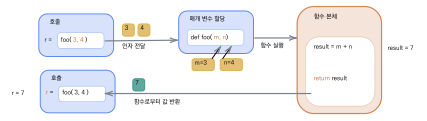
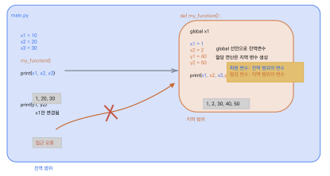
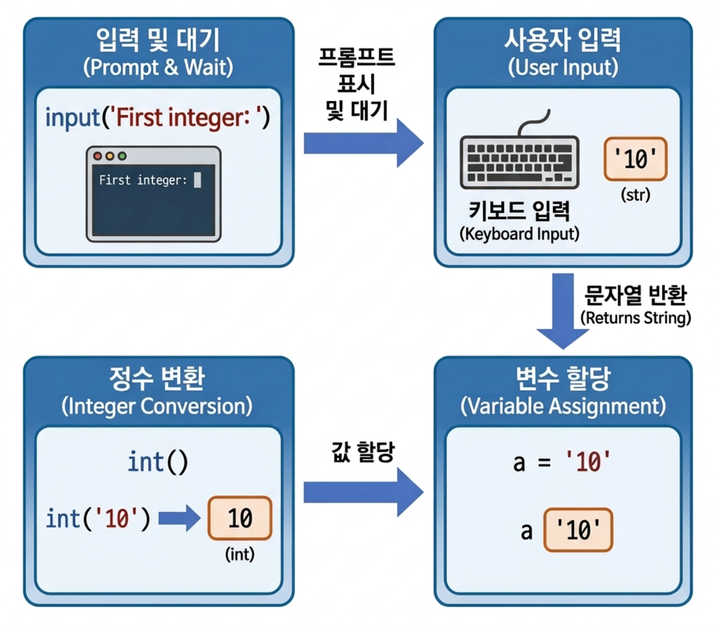

함수와 입출력
def키워드로 함수를 정의하고 호출할 수 있다.- 매개변수와 반환값의 역할과 차이를 구분할 수 있다.
- 기본값 매개변수와 키워드 인자를 활용할 수 있다.
- 지역변수와 전역변수의 범위(scope)를 이해할 수 있다.
input()으로 사용자 입력을 받아 처리하는 프로그램을 작성할 수 있다.
지금까지 우리는 변수, 연산자, 조건문, 반복문이라는 도구를 하나씩 배워 왔다. 이 도구들만으로도 간단한 프로그램을 작성할 수 있지만, 프로그램의 규모가 커지면 동일한 코드를 여러 곳에 반복해서 작성하게 되는 문제가 발생한다. 예를 들어 성적을 계산하는 코드가 세 군데에서 필요하다면, 같은 수식을 세 번 복사해야 한다. 이때 수식에 오류가 발견되면 세 곳을 모두 수정해야 하므로 유지 보수가 매우 불편해진다.
함수(function)는 이런 문제를 해결하는 핵심 도구이다. 함수는 레고 블록과 같다 — 작은 단위의 기능을 하나씩 만들어 두면, 필요할 때마다 꺼내어 조합하는 것만으로 크고 복잡한 프로그램을 완성할 수 있다. 실제로 전문 개발자들이 작성하는 프로그램은 수백, 수천 개의 함수로 구성되어 있으며, 각 함수는 하나의 명확한 역할을 담당한다.
이 장에서는 먼저 함수의 역할과 정의 방법을 배우고, 함수에 값을 전달하는 매개변수와 결과를 돌려받는 반환값을 익힌다. 이어서 변수가 유효한 범위인 지역변수와 전역변수의 개념을 이해한 뒤, 사용자로부터 입력을 받는 input() 함수와 출력 형식을 지정하는 문자열 포매팅까지 학습한다. 이 장을 마치면 프로그램을 기능 단위로 나누어 체계적으로 설계하는 능력을 갖추게 될 것이다.
4.1 함수의 역할과 정의
프로그래밍에서 함수function란 특정한 작업을 수행하는 코드의 묶음이다. 수학에서 \(f(x) = 2x + 1\)처럼 입력을 받아 결과를 내놓는 것과 비슷하지만, 프로그래밍의 함수는 반드시 수학적 계산만 하는 것이 아니라 화면에 글자를 출력하거나, 파일을 저장하거나, 데이터를 정렬하는 등 "어떤 일이든" 할 수 있다는 점이 다르다.
함수를 레고 블록에 비유하면 이해가 쉽다. 레고로 자동차를 만들 때, 바퀴 블록, 차체 블록, 창문 블록을 각각 만들어 둔 뒤 이들을 조합하면 완성된다. 프로그램도 마찬가지로 "별표를 출력하는 함수", "두 수의 합을 구하는 함수", "파일을 읽는 함수" 같은 작은 단위의 함수를 만들어 두고, 이를 적절히 호출하고 조합하면 큰 소프트웨어를 만들 수 있다. 이런 방식을 구조적 프로그래밍이라고 하며, 코드의 재사용성과 가독성을 크게 높여 준다.
내장 함수와 사용자 정의 함수
파이썬에서 미리 제공하는 함수를 내장 함수built-in function라고 한다.
우리가 이미 사용해 온 print(), input(), len(), type(), range() 등이 모두 내장 함수이다. 파이썬 인터프리터를 설치하면 별도의 준비 없이 바로 사용할 수 있기 때문에 매우 편리하다. 내장 함수의 전체 목록과 상세한 사용법은 파이썬 공식 문서에서 확인할 수 있다.
그러나 내장 함수만으로는 모든 상황에 대응할 수 없다. 예를 들어 "학생 성적의 등급을 매기는 함수"나 "2차 방정식의 근을 구하는 함수"는 파이썬이 기본으로 제공하지 않는다. 이처럼 개발자가 필요에 맞게 직접 만드는 함수를 사용자 정의 함수user defined function라고 한다. 사용자 정의 함수를 잘 활용하면 반복 코드를 줄이고, 프로그램의 구조를 명확하게 설계할 수 있다.
함수 정의와 호출
함수를 만들 때는 def 키워드를 사용한다. def는 "define"(정의하다)의 줄임말이며, 조건문에서 if를 쓰듯이 함수를 선언할 때 반드시 def를 적어야 한다. 기본 문법은 다음과 같다.
def function_name(param1, param2,...):
code to execute
return value # 생략 가능def 다음에 함수 이름을 적고, 괄호 안에 매개변수를 나열한 뒤 콜론(:)으로 헤드를 마무리한다. 그 아래에 들여쓰기된 코드 블록이 함수의 몸체(body)가 된다. 조건문이나 반복문의 블록과 마찬가지로, 함수 몸체도 반드시 들여쓰기를 해야 파이썬이 함수의 범위를 인식한다. 마지막으로 return 문은 함수가 계산한 결과를 호출한 곳으로 돌려줄 때 사용하며, 반환할 값이 없으면 생략할 수 있다.

그림 4.1은 함수 호출의 전체 과정을 보여 준다. 인자가 매개변수에 전달되고, 함수 본체가 실행된 뒤, 결과가 반환값으로 돌아오는 흐름을 확인하자. 인자가 매개변수에 전달되고, 함수 본체가 실행된 뒤, 결과가 반환값으로 돌아온다.
이제 간단한 예제를 통해 함수를 정의하고 호출하는 방법을 직접 확인해 보자. 아래 코드에서 print_star()는 별표(*) 한 줄을 출력하는 함수이다. 한 번 정의해 두면 이름만으로 몇 번이든 호출할 수 있다.
def print_star(): # 별표를 출력하는 함수 정의
print('************************')
print_star() # 함수 호출 1
print_star() # 함수 호출 2
print_star() # 함수 호출 3************************************************
************************
위 코드를 살펴보면, def print_star():로 함수를 정의하고, 아래에서 print_star()를 세 번 호출했다. 함수 정의 자체는 코드를 "등록"만 할 뿐 실행하지 않는다. 실제 실행은 print_star()처럼 함수 이름에 괄호를 붙여 호출할 때 비로소 이루어진다. 이 점은 초보자가 자주 혼동하는 부분이므로 주의하자. 만약 함수 정의만 하고 호출하지 않으면 아무런 출력도 나타나지 않는다.
함수를 사용하면 왜 좋을까? 위 예제에서 별표 줄을 10번 출력하고 싶다면 print_star()를 10번 쓰면 된다. 만약 함수 없이 print('****...')를 10번 복사해 놓은 상태에서 별표를 해시마크(#)로 바꾸고 싶다면 10군데를 모두 수정해야 한다. 그러나 함수를 사용하면 함수 몸체 한 곳만 수정하면 10번의 호출 모두에 변경 사항이 반영된다. 이것이 함수의 핵심적인 장점이다.
이번에는 두 개의 함수를 정의하여 번갈아 호출해 보자.
def print_star():
print('************************')
def print_plus():
print('++++++++++++++++++++++++')
print_star()
print_plus()
print_star()
print_plus()************************++++++++++++++++++++++++
************************
++++++++++++++++++++++++
이처럼 각각의 함수가 서로 다른 역할을 담당하며, 호출 순서를 바꾸는 것만으로 다양한 출력 패턴을 만들 수 있다. 프로그램을 여러 함수로 나누면 각 함수가 "하나의 일"에 집중하게 되므로, 코드를 읽는 사람도 프로그램의 구조를 쉽게 파악할 수 있다.
함수를 사용할 때의 장점을 정리하면 다음과 같다. 첫째, 반복되는 코드를 하나로 묶어 재사용할 수 있다. 둘째, 프로그램을 기능 단위로 분리하므로 구조적 프로그래밍이 가능해진다. 셋째, 코드의 가독성이 높아지고 유지 보수가 쉬워진다. 넷째, 프로그램 수정 시 해당 함수만 고치면 되므로 오류 수정이 간편하다. 다섯째, 이미 만들어진 함수를 다른 프로그램에서도 그대로 사용할 수 있어 개발 시간을 절약할 수 있다.
함수는 반드시 호출하기 전에 정의되어야 한다.
함수 정의보다 위에서 호출하면 NameError: name 'xxx' is not defined 오류가 발생한다.
또한 함수 몸체의 코드는 반드시 들여쓰기를 해야 한다. 들여쓰기를 하지 않으면 IndentationError가 발생하며, 이는 초보자가 가장 자주 만나는 실수 중 하나이다.
함수는 프로그램을 구성하는 기본 단위로, def 키워드를 사용하여 정의한다. 함수를 정의하면 코드를 "등록"하는 것이고, 함수를 호출하면 등록된 코드가 실행된다. 함수를 사용하면 코드의 재사용성, 가독성, 유지 보수성이 크게 향상되며, 이는 프로그램의 규모가 커질수록 더욱 중요해진다.
4.2 매개변수와 반환값
앞 절에서 배운 print_star() 함수는 항상 동일한 별표 줄을 출력했다. 그런데 "별표를 4줄 출력해 주세요", "이번에는 10줄 출력해 주세요"와 같이 상황에 따라 다른 동작을 하게 만들 수는 없을까? 이럴 때 사용하는 것이 바로 매개변수이다. 매개변수를 활용하면 함수를 훨씬 유연하고 범용적으로 만들 수 있다.
매개변수와 인자
함수를 호출할 때 외부에서 전달하는 값을 인자argument 또는 전달 인자라고 한다. 그리고 함수 내부에서 이 값을 받아서 사용하는 변수를 매개변수parameter라고 한다. 비유하자면, 매개변수는 "빈 그릇"이고 인자는 "그릇에 담을 음식"이다. 함수를 정의할 때 빈 그릇(매개변수)을 준비해 두면, 호출할 때마다 다른 음식(인자)을 담아서 보낼 수 있다.
def print_star(n): # n은 매개변수
for _ in range(n):
print('************************')
print_star(4) # 4는 인자************************************************
************************
************************
위 코드에서 print_star(n) 함수는 매개변수 n을 받아서 별표 줄을 n번 출력한다. print_star(4)로 호출하면 인자 4가 매개변수 n에 전달되어 별표가 4줄 출력된다. 만약 10줄을 출력하고 싶다면 print_star(10)으로 호출하기만 하면 된다.
이처럼 매개변수를 사용하면 하나의 함수 정의로 다양한 상황에 대응할 수 있으므로, 코드의 유연성이 크게 향상된다.
매개변수는 여러 개를 사용할 수도 있다. 두 수의 합을 구하여 출력하는 함수를 만들어 보자.
def print_sum(a, b):
result = a + b
print('The sum of', a, 'and', b, 'is', result)
print_sum(10, 20)
print_sum(100, 200)The sum of 10 and 20 is 30The sum of 100 and 200 is 300
여기서 주의할 점이 있다. 함수를 정의할 때 매개변수의 개수와 호출할 때 전달하는 인자의 개수가 반드시 일치해야 한다. 위의 print_sum() 함수는 매개변수가 2개인데, 인자를 1개만 전달하면 파이썬은 TypeError를 발생시킨다.
함수 정의 시 매개변수가 2개인데 인자를 1개만 전달하면 TypeError가 발생한다.
print_sum(10) # TypeError: missing 1 required positional argument: 'b'반대로 인자를 3개 전달해도 오류가 발생한다. 매개변수와 인자의 개수는 정확히 맞추어야 한다.
기본값 매개변수와 키워드 인자
매개변수에 기본값default value을 지정해 두면, 호출 시 해당 인자를 생략할 수 있다. 이 기능은 "보통은 이 값을 사용하지만, 필요하면 다른 값을 넣을 수도 있다"는 상황에서 매우 유용하다. 예를 들어 인사말 함수에서 기본 인사를 "Hello"로 설정하되, 원하면 다른 인사로 바꿀 수 있게 만들어 보자.
def greet(name, greeting='Hello'):
print(f'{greeting}, {name}!')
greet('Alice') # 기본값 사용
greet('Bob', 'Nice to meet you') # 기본값 대신 전달한 값 사용Hello, Alice!Nice to meet you, Bob!
첫 번째 호출에서는 greeting 인자를 생략했으므로 기본값 'Hello'가 사용되었다. 두 번째 호출에서는 'Nice to meet you'를 직접 전달하여 기본값을 덮어썼다. 이처럼 기본값 매개변수를 활용하면 함수를 호출하는 코드가 더 간결해진다.
또한 키워드 인자keyword argument를 사용하면 매개변수 이름을 지정하여 순서와 관계없이 값을 전달할 수 있다. 매개변수가 많은 함수에서 특히 유용하다.
greet(greeting='Welcome', name='Charlie')Welcome, Charlie!
위 코드에서 name과 greeting의 순서가 함수 정의와 다르지만, 매개변수 이름을 명시했기 때문에 올바르게 동작한다. 초보자에게는 "인자의 순서를 외울 필요 없이 이름만 기억하면 된다"는 점에서 키워드 인자가 편리하다.
가변 인자 — *args와 **kwargs
지금까지 살펴본 함수들은 모두 매개변수의 개수가 고정되어 있었다. 그러나 인자의 개수를 미리 알 수 없는 상황도 자주 있다. 예를 들어 임의 개수의 점수를 받아 평균을 구하거나, 여러 단어를 한꺼번에 출력하는 함수를 만들고 싶다면 어떻게 해야 할까? 이럴 때 사용하는 것이 가변 인자variable arguments이다.
매개변수 앞에 별표(*) 하나를 붙이면, 호출 시 전달된 임의 개수의 위치 인자를 튜플로 묶어 받는다. 관례적으로 *args라는 이름을 사용한다.
def average(*scores): # 모든 위치 인자를 튜플로 받음
if len(scores) == 0:
return 0
return sum(scores) / len(scores)
print(average(80, 90, 100)) # 인자 3개
print(average(70, 85, 95, 100)) # 인자 4개90.087.5
average() 함수는 호출 시 전달된 모든 점수를 scores라는 튜플로 받는다. 인자가 3개든 4개든 자유롭게 호출할 수 있고, 함수 내부에서는 일반 튜플처럼 sum(), len() 등으로 다룰 수 있다.
별표 두 개(**)를 붙이면 키워드 인자들을 딕셔너리로 묶어 받는다. 관례적으로 **kwargs라는 이름을 사용한다.
def make_profile(**info): # 키워드 인자를 딕셔너리로 받음
for key, value in info.items():
print(f'{key}: {value}')
make_profile(name='Alice', age=20, job='Designer')name: Aliceage: 20
job: Designer
make_profile()은 호출 시 어떤 키워드 인자가 와도 모두 info 딕셔너리에 담아 처리한다. 한 함수에서 *args와 **kwargs를 같이 쓸 수도 있는데, 이때 순서는 def f(필수, *args, **kwargs):로 고정된다. 가변 인자는 print()의 여러 출력값 처리, 라이브러리의 옵션 전달 등 파이썬 곳곳에서 매우 폭넓게 사용된다.
return을 이용한 반환값
지금까지의 함수들은 결과를 화면에 직접 출력했다. 그러나 실제 프로그래밍에서는 함수가 계산한 결과를 "돌려받아" 다른 계산에 활용하는 경우가 훨씬 많다. 이때 사용하는 것이 return 키워드이다.
함수를 자판기에 비유해 보자. 동전(인자)을 넣고 버튼을 누르면, 자판기(함수)는 내부에서 음료를 만들어 완성된 음료(반환값)를 배출구로 내보낸다. return은 바로 이 "배출구" 역할을 한다.
def get_sum(a, b):
return a + b
result = get_sum(100, 200)
print('Sum of two numbers:', result)Sum of two numbers: 300
위 코드에서 get_sum(100, 200)을 호출하면 함수 내부에서 a + b를 계산한 뒤 그 결과인 300을 return으로 돌려준다. 호출한 쪽에서는 이 반환값을 변수 result에 저장하여 이후 코드에서 자유롭게 사용할 수 있다.
앞서 만든 print_sum() 함수와 비교해 보면, print_sum()은 결과를 화면에 바로 출력할 뿐 반환하지 않는다. 반면 get_sum()은 결과를 반환하므로, 반환값을 다른 변수에 저장하거나 다른 함수의 인자로 전달하는 등 유연하게 활용할 수 있다. 일반적으로 "결과를 돌려주는 함수"가 "결과를 바로 출력하는 함수"보다 활용도가 높다.
print()는 값을 화면에 출력하는 기능이며, return은 함수의 결과 값을 호출한 곳으로 돌려주는 기능이다.
def f(): return 10 def g(): print(10)
f()는 값을 반환하지만 화면에 아무것도 출력하지 않으며, g()는 값을 출력하지만 반환값은 없다. 이 차이를 이해하는 것은 함수 학습에서 매우 중요하다.
return 문이 실행되면 함수는 즉시 종료된다는 점도 기억하자. return 아래에 코드가 있더라도 실행되지 않는다. 이 특성을 이용하면 조건에 따라 함수를 일찍 종료시키는 패턴도 자주 사용된다.
다중 반환값
파이썬에서는 return 문으로 여러 값을 동시에 반환할 수 있다. 이것은 C/C++이나 Java와 달리 파이썬만의 편리한 특징이다. 여러 값을 쉼표로 구분하여 반환하면, 이들은 튜플tuple 형태로 묶여서 전달된다.
2차 방정식 \(ax^2 + bx + c = 0\)의 두 근을 구하는 함수를 예로 들어 보자.
def get_root(a, b, c):
r1 = (-b + (b**2 - 4*a*c)**0.5) / (2*a)
r2 = (-b - (b**2 - 4*a*c)**0.5) / (2*a)
return r1, r2 # 두 값을 반환
result1, result2 = get_root(1, 2, -8)
print('The roots are', result1, 'or', result2)The roots are 2.0 or -4.0
return r1, r2로 두 개의 값을 반환하고, 호출하는 쪽에서 result1, result2 = get_root(1, 2, -8)처럼 두 변수로 나누어 받는다. 만약 함수를 사용하지 않았다면 계수가 바뀔 때마다 같은 수식을 반복해서 작성해야 했을 것이다. 함수를 사용하면 get_root(2, -6, -8)처럼 인자만 바꾸어 호출하면 되므로 코드가 훨씬 간결하고 읽기 쉬워진다.
매개변수(parameter)는 함수를 정의할 때 괄호 안에 선언하는 변수이다. 예를 들어 def foo(m, n):에서 m과 n이 매개변수이다.
인자(argument)는 함수를 호출할 때 전달하는 실제 값이다. 예를 들어 foo(3, 4)에서 3과 4가 인자이다.
일상 대화에서는 두 용어를 혼용하기도 하지만, 정확히 구분하면 코드를 설명하거나 오류 메시지를 읽을 때 도움이 된다.
리스트를 함수에 전달하면 함수 내부에서 원본 리스트의 값이 변경될 수 있다.
def change(x): x.append(100) a = [1, 2] change(a) print(a) # [1, 2, 100]
이는 리스트가 변경 가능한 객체(mutable)이기 때문이다. 함수에 전달된 리스트는 복사된 것이 아니라 같은 객체를 참조한다. 반면 숫자·문자열·튜플 같은 불변(immutable) 객체는 함수 내부에서 다시 대입해도 바깥 변수에는 영향이 없다.
타입 힌트 — 함수 시그니처에 의도 드러내기
파이썬 3.5 이후부터는 매개변수와 반환값에 타입 힌트type hint를 붙여 함수가 어떤 값을 주고받는지 명시할 수 있다. 타입 힌트는 함수의 동작을 바꾸지 않는다 — 파이썬은 실행 시점에 타입을 강제하지 않는다. 다만 IDE의 자동 완성, 오류 조기 발견, 코드 리뷰 시 의도 전달에 큰 도움이 된다.
def add(a: int, b: int) -> int:
return a + b
def greet(name: str, times: int = 1) -> None:
for _ in range(times):
print(f'Hello, {name}!')매개변수 뒤에 : 타입, 함수 정의 뒤에 -> 반환타입을 적는다. 자주 쓰는 내장 타입은 int, float, str, bool, list, dict, tuple이며, 반환값이 없으면 None으로 표기한다. 좀 더 구체적으로 list[int](정수 리스트), dict[str, int](문자열 키·정수 값 딕셔너리)처럼 요소 타입까지 지정할 수도 있다(파이썬 3.9 이상).
타입 힌트는 선택 사항이지만, 규모가 커진 프로젝트에서는 mypy 같은 정적 검사 도구와 함께 실전 코드 품질을 크게 높여 준다.
재귀호출 — 함수가 자기 자신을 호출
함수가 자기 자신을 호출하는 것을 재귀호출recursion이라고 한다. 처음 보면 어색하지만, 큰 문제를 같은 모양의 더 작은 문제로 잘게 쪼개서 푸는 매우 강력한 기법이다. 양쪽 거울이 서로 마주 보고 무한히 반사되는 모습을 떠올리면 자기 자신을 부르는 함수의 작동 원리가 와 닿는다.
재귀가 무한히 반복되지 않으려면 두 가지 요소가 반드시 있어야 한다. 기저 조건base case은 더 이상 재귀하지 않고 바로 답을 돌려주는 멈춤 지점이며, 재귀 단계recursive case는 같은 문제를 한 단계 더 작은 형태로 바꿔 자기 자신을 다시 호출하는 단계이다. 잘 정의된 기저 조건이 없으면 함수는 자기를 끝없이 부르다가 결국 멈추고 만다.
가장 잘 알려진 예는 팩토리얼factorial이다. (n!)은 1부터 (n)까지의 곱으로, 점화식 (n! = n × (n-1)!)이 자기 자신과 같은 형태를 더 작은 입력에 대해 정의한다.
def factorial(n):
if n <= 1: # 기저 조건
return 1
return n * factorial(n - 1) # 재귀 단계
print(factorial(5)) # 120
print(factorial(7)) # 50401205040
factorial(5)는 5 * factorial(4)로, 다시 4 * factorial(3)으로 풀리며 factorial(1)이 1을 돌려주는 순간 멈춘다. 호출은 factorial(5) (→) factorial(4) (→) (⋯) (→) factorial(1)로 다섯 번 깊게 들어갔다가 차례로 돌아오며 곱셈이 완성된다.
조금 더 실용적인 문제로 두 정수의 최대공약수GCD, greatest common divisor를 유클리드 호제법Euclidean algorithm으로 구해 보자. 두 줄짜리 우아한 재귀로 표현된다.
def gcd(a, b):
if b == 0: # 기저 조건
return a
return gcd(b, a % b) # 재귀 단계
print(gcd(48, 18)) # 6
print(gcd(100, 75)) # 25625
gcd(48, 18)은 gcd(18, 12) (→) gcd(12, 6) (→) gcd(6, 0)을 거쳐 (6)을 반환한다. 반복문으로도 같은 결과를 얻을 수 있지만, 재귀 표현은 점화식 gcd(a, b) = gcd(b, a mod b)를 코드로 거의 그대로 옮긴 듯한 가독성을 보여 준다.
재귀는 호출할 때마다 함수 정보를 메모리(호출 스택call stack)에 쌓아 두기 때문에 깊이가 너무 커지면 RecursionError가 발생한다. 파이썬은 기본적으로 약 1,000회 정도의 재귀 깊이만 허용한다. 같은 작업을 반복문(for·while)으로 풀 수 있다면 보통 반복문 쪽이 메모리·속도 모두 유리하다. 재귀는 문제 자체가 자기 자신을 닮은 구조(예: 트리, 분할 정복)일 때 가장 빛난다.
매개변수는 함수의 입력을 받는 변수이고, 인자는 호출 시 전달하는 실제 값이다. 기본값 매개변수를 사용하면 인자를 생략할 수 있으며, 키워드 인자를 사용하면 순서에 관계없이 값을 전달할 수 있다. return 문으로 하나 이상의 값을 반환할 수 있고, 함수가 자기 자신을 호출하는 재귀호출을 통해 큰 문제를 같은 구조의 작은 문제로 분해해 풀 수 있다 — 단, 반드시 기저 조건을 두어 멈춤 지점을 마련해야 한다.
4.3 변수의 범위
함수를 사용하다 보면 "함수 안에서 만든 변수를 밖에서 쓸 수 있을까?", "함수 밖에서 만든 변수를 안에서 수정할 수 있을까?" 같은 의문이 생긴다. 이 질문에 답하려면 변수의 범위(scope)라는 개념을 이해해야 한다. 변수의 범위란 "변수가 유효한 영역"을 뜻하며, 이를 제대로 이해하지 못하면 예상치 못한 오류나 의도하지 않은 값의 변경이 발생할 수 있다. 이 개념은 Luciano Ramalho의 『Fluent Python』에서도 심도 있게 다루고 있다.
지역변수와 전역변수
함수 내부에서 선언된 변수를 지역변수local variable라 하고, 함수 바깥에서 선언된 변수를 전역변수global variable라 한다. 지역변수는 함수가 호출될 때 생성되고, 함수가 종료되면 메모리에서 사라진다. 반면 전역변수는 프로그램이 시작될 때 생성되어 프로그램이 끝날 때까지 유지된다.
이 개념을 교실에 비유해 보자. 전역변수는 복도 게시판에 적힌 공지사항으로, 모든 교실(함수)에서 볼 수 있다. 지역변수는 특정 교실의 칠판에 적힌 내용으로, 그 교실 안에서만 볼 수 있고 수업이 끝나면 지워진다.
x1 = 10
x2 = 20
x3 = 30
def my_function() :
global x1
x1 = 1 # 전역변수 x1 (global로 선언됨)
x2 = 2 # 지역변수 x2 (할당으로 생성)
y1 = 40 # 지역변수
y2 = 50
print('inside function: ', x1, x2, x3, y1, y2)
my_function(); # 함수 호출, x1, x2, x3, y1, y2 출력
# 예상 출력: 1, 2, 30, 40, 50
print('outside function -')
print(x1, x2, x3) # 전역변수 x1, x2, x3
# 예상 출력: 1, 20, 30
print(y1, y2) # 지역변수 y1, y2는 접근 불가
# 예상 결과: NameErrorinside function: 1, 2, 30, 40, 50outside function -
1 20 30
NameError: name 'y1' is not defined. Did you mean: 'x1'?
위 코드에서 x1, x2, x3은 함수 바깥에서 선언된 전역변수이고, my_function() 안에서는 같은 이름의 변수들이 다양한 방식으로 등장한다. 먼저 접근 범위부터 정리해 보자. 전역변수는 어디서나 읽을 수 있으므로 함수 안에서도 그대로 사용할 수 있다. 위 코드에서 x3은 함수 안에서 단순히 읽기만 하므로 전역변수 x3을 참조하여 30이 출력된다. 반대로 지역변수는 함수 안에서만 유효하므로, 함수 밖에서 print(y1, y2)로 접근하려 하면 NameError가 발생한다.
함수 내부에서 변수에 할당을 하면 사정이 달라진다. 파이썬은 같은 이름의 전역변수가 이미 있더라도 함수 안에서의 할당을 새로운 지역변수의 생성으로 처리한다. 위 코드에서 x2 = 2는 전역변수 x2(값 20)와 무관한 새 지역변수를 함수 안에 만든다. 그래서 함수 호출이 끝나고 바깥에서 x2를 출력하면 여전히 20이다. y1 = 40, y2 = 50도 같은 이유로 함수 호출이 끝나면 사라지는 지역변수다.
이러한 자동 생성을 막고 함수 안에서 전역변수를 직접 다루고 싶다면 global 키워드로 그 이름을 명시적으로 전역변수로 선언해야 한다. 위 코드에서는 global x1 선언 덕분에 x1 = 1이 새 지역변수를 만들지 않고 전역변수 x1의 값을 10에서 1로 직접 바꾼다. 그래서 함수 호출이 끝난 뒤에 print(x1, x2, x3)을 실행하면 전역 x1이 바뀐 1 20 30이 출력된다.

그림 4.2은 전역변수와 지역변수의 범위를 시각적으로 보여 준다. 전역변수는 함수 안에서 읽을 수 있지만, 지역변수는 함수 밖에서 접근할 수 없다. 변수의 접근 범위와 관련해 잘 기억해야 할 두 가지 상황을 구체적 예와 함께 살펴보자.
같은 이름의 전역변수와 지역변수
초보자가 자주 빠지는 함정이 하나 있다. 함수 내부에서 전역변수와 같은 이름의 변수에 값을 할당하면, 파이썬은 이를 전역변수의 수정이 아닌 새로운 지역변수의 생성으로 처리한다. 즉, 이름은 같지만 전혀 별개의 변수가 만들어지는 것이다.
x = 100 # 전역변수
def change_x():
x = 999 # 지역변수 (전역변수와 별개)
print('Inside function x:', x)
change_x()
print('Outside function x:', x) # 전역변수는 변하지 않음Inside function x: 999Outside function x: 100
함수 내부에서 x = 999를 실행했지만, 함수 밖의 x는 여전히 100이다. 함수 안에서 만든 x는 전역변수 x와 이름만 같을 뿐, 완전히 다른 지역변수이기 때문이다. 이 사실을 모르면 "분명히 함수 안에서 값을 바꿨는데 왜 반영되지 않지?"라는 혼란에 빠질 수 있으므로 반드시 기억하자.
global 키워드
그렇다면 함수 내부에서 전역변수를 정말로 수정하려면 어떻게 해야 할까? 이때 사용하는 것이 global 키워드이다. 함수 내부에서 global 변수이름을 선언하면, 해당 변수는 새로운 지역변수가 아니라 전역변수를 가리키게 된다.
count = 0 # 전역변수
def increment():
global count # 전역변수 count 사용 선언
count += 1
increment()
increment()
increment()
print('count =', count)count = 3
global count를 선언했기 때문에, count += 1은 전역변수 count를 직접 수정한다.
increment()를 세 번 호출했으므로 최종값은 3이 된다.
그러나 global 키워드를 남용하면 프로그램이 복잡해지고 버그 추적이 매우 어려워진다. 함수 A에서 전역변수를 수정하고, 함수 B에서도 같은 전역변수를 수정하면, 프로그램의 동작을 예측하기가 어려워지기 때문이다. 따라서 가능하면 매개변수로 값을 전달하고, return으로 결과를 돌려받는 방식이 바람직하다. global은 꼭 필요한 경우에만 제한적으로 사용하자.
global 키워드를 남용하면 프로그램이 복잡해지고 버그 추적이 어려워진다.
가능하면 매개변수와 반환값을 이용하여 데이터를 주고받는 것이 좋다. 전역변수에 의존하는 함수는 "외부 상태에 따라 동작이 달라지는 함수"가 되므로, 재사용성과 테스트 용이성이 떨어진다.
지역변수는 함수 내부에서만 유효하며 함수 종료 시 사라진다. 전역변수는 프로그램 전체에서 접근 가능하지만, 함수 내부에서 같은 이름에 값을 할당하면 별개의 지역변수가 생성된다. 함수 내부에서 전역변수를 수정하려면 global 키워드를 사용해야 하지만, 되도록 매개변수와 return을 활용하는 것이 깔끔한 프로그래밍 습관이다.
4.4 입출력과 포매팅
지금까지 우리가 만든 프로그램들은 코드 안에 값이 고정되어 있었다. 예를 들어 get_sum(10, 20)에서 10과 20은 코드를 작성할 때 미리 정해진 값이다. 그러나 실제 프로그램은 사용자가 실행 중에 값을 입력하고, 프로그램이 그 값을 처리하여 결과를 출력하는 "대화형" 구조를 가지는 경우가 대부분이다. 계산기 프로그램을 떠올려 보면 쉽게 이해할 수 있다 — 사용자가 숫자를 입력하면 프로그램이 계산하여 결과를 보여 준다. 이번 절에서는 사용자 입력을 받는 input() 함수와 출력 형식을 가다듬는 문자열 포매팅을 배운다.
input() 함수
input() 함수는 프로그램 실행 중에 사용자로부터 키보드 입력을 받는 내장 함수이다. 괄호 안에 문자열을 넣으면 해당 문자열이 화면에 프롬프트(안내 메시지)로 표시되고, 사용자가 값을 입력한 뒤 Enter를 누르면 입력한 내용이 함수의 반환값으로 전달된다.
name = input('Enter your name: ')
print('Hello,', name, '!')Enter your name: Hong GildongHello, Hong Gildong !
위 코드를 실행하면 Enter your name:이라는 안내 메시지가 나타나고, 사용자가 이름을 입력하면 그 값이 변수 name에 저장된다. 여기서 매우 중요한 사실이 있다. input() 함수가 반환하는 값은 사용자가 숫자를 입력하더라도 항상 문자열(str) 형태라는 점이다. 예를 들어 사용자가 "42"를 입력하면, 이 값은 정수 42가 아니라 문자열 '42'로 저장된다.
문자열을 숫자로 변환
input()으로 받은 값으로 숫자 연산을 하려면 int() 또는 float() 함수를 사용하여 형변환을 해야 한다. 이 과정을 생략하면 예상치 못한 결과가 발생한다. 예를 들어 '10' + '20'은 숫자 덧셈이 아니라 문자열 연결이므로 결과가 '1020'이 된다.
a = int(input('First integer: '))
b = int(input('Second integer: '))
print(f'{a} + {b} = {a + b}')First integer: 10Second integer: 20
10 + 20 = 30
int(input(...)) 패턴은 파이썬에서 정수 입력을 받을 때 가장 많이 사용되는 관용적 표현이다. 실수를 입력받으려면 int 대신 float를 사용하면 된다.

그림 4.3은 int(input(...)) 패턴의 동작 과정을 보여 준다. input() 함수는 항상 문자열을 반환하므로 int()로 정수 변환하는 단계가 필요하다.
input()의 반환값은 항상 문자열이다. 숫자 연산 전에 반드시 int() 또는 float()로 변환해야 한다. 만약 사용자가 "abc"처럼 숫자가 아닌 값을 입력한 상태에서 int()로 변환하면 ValueError가 발생한다. 이러한 오류를 방지하려면 나중에 배울 예외 처리(try-except)를 활용하면 된다.
이제 함수와 입력을 결합한 실용적인 예제를 만들어 보자. 사용자로부터 두 수를 입력받아 사칙연산 결과를 출력하는 간단한 계산기를 함수로 구현할 수 있다.
def calc(a, b):
print(f'{a} + {b} = {a + b}')
print(f'{a} - {b} = {a - b}')
print(f'{a} * {b} = {a * b}')
print(f'{a} / {b} = {a / b:.2f}')
x = int(input('Enter first number: '))
y = int(input('Enter second number: '))
calc(x, y)Enter first number: 15Enter second number: 4
15 + 4 = 19
15 - 4 = 11
15 * 4 = 60
15 / 4 = 3.75
print() 함수의 sep, end 키워드 인자를 활용한 출력 형식 조절과 format() 메소드 및 f-string을 이용한 문자열 포매팅은 이미 제2장에서 다루었으므로, 자세한 사용법과 예제는 그곳을 참고하기 바란다.
주요 내장 함수
파이썬에서 자주 사용하는 내장 함수들을 정리하면 다음과 같다. 이 함수들은 별도의 정의 없이 바로 사용할 수 있으며, 프로그래밍에서 매우 빈번하게 활용된다. 파이썬 튜토리얼에서 이러한 내장 함수의 활용 예제를 더 많이 확인할 수 있다.
| 함수 | 설명 |
|---|---|
abs(x) | x의 절댓값을 반환한다. |
max(a,b,...) | 인자 중 최댓값을 반환한다. |
min(a,b,...) | 인자 중 최솟값을 반환한다. |
sum(리스트) | 리스트 원소의 합을 반환한다. |
len(객체) | 객체의 길이(원소 개수)를 반환한다. |
round(x,n) | x를 소수점 n자리까지 반올림한다. |
sorted(리스트) | 정렬된 새 리스트를 반환한다. |
type(x) | x의 자료형을 반환한다. |
이 함수들은 모두 "값을 받아서 결과를 돌려주는" 전형적인 함수 패턴을 따르고 있다. 예제를 통해 사용법을 확인해 보자.
print(abs(-7)) # 7
print(max(3, 7, 1)) # 7
print(min(3, 7, 1)) # 1
print(round(3.14159, 2)) # 3.1477
1
3.14
abs(-7)은 \(-7\)의 절댓값인 7을 반환하고, max(3, 7, 1)은 세 수 중 가장 큰 7을 반환한다. round(3.14159, 2)는 3.14159를 소수점 둘째 자리에서 반올림하여 3.14를 반환한다. 이처럼 내장 함수를 적극 활용하면 직접 구현해야 할 코드의 양을 크게 줄일 수 있다.
지금까지 함수의 정의와 호출, 매개변수와 반환값, 변수의 범위, 그리고 입출력과 포매팅을 배웠다. 이 네 가지 주제는 서로 밀접하게 연결되어 있으며, 이 장에서 배운 내용을 바탕으로 다음 장부터는 리스트, 딕셔너리 같은 자료구조를 배우면서 더 복잡하고 실용적인 프로그램을 작성하게 될 것이다. 함수의 설계와 활용에 대해 더 깊이 학습하고 싶다면 Allen Downey의 『Think Python』과 John Guttag의 『Introduction to Computation and Programming Using Python』을 추천한다. 또한 함수의 문서화에 관한 표준인 PEP 257도 참고하자.
입력값을 정해진 형식으로 정렬해 출력하기
입력으로 들어오는 숫자는 3.14, 1234.5, 0.5, 99처럼 정수부와 소수부의 길이가 모두 다르다. 이런 값들을 표 형태로 가지런히 출력하려면 출력 폭과 소수점 자리수를 함께 지정해야 한다. f-string 문법은 이미 제2장에서 다루었으므로 자세한 사용법은 그곳을 참고하고, 여기서는 자릿수를 맞추는 데 쓰는 형식 지정자만 짧게 정리해 둔다.
{x:7.2f}— 실수x를 전체 폭 7자리, 소수점 둘째 자리까지 표시한다. 부족한 자리는 앞쪽이 공백으로 채워져 오른쪽으로 정렬된다.- 정수부 4자리 + 소수점 1자리 + 소수부 2자리 = 총 7자리이므로, 정수부가 네 자리 이하인 모든 실수가 같은 폭으로 정렬된다.
- 폭 자리에
0을 덧붙여{x:07.2f}로 쓰면 빈 자리가 0으로 채워진다.
다음은 input()으로 받은 여러 숫자를 위 형식으로 출력하는 예제이다.
n = int(input('How many numbers? '))
print('---- formatted ----')
for _ in range(n):
x = float(input('Enter a number: '))
print(f'{x:7.2f}') # 전체 폭 7자리, 소수점 2자리How many numbers? 4Enter a number: 3.14159
Enter a number: 1234.5
Enter a number: 0.5
Enter a number: 99
---- formatted ----
3.14
1234.50
0.50
99.00
소수부는 .2f 덕분에 모두 두 자리로 통일되었고, 정수부도 폭 7자리(정수부 최대 4자리 + 점 + 소수부 2자리) 안에서 오른쪽 정렬되어 한눈에 비교할 수 있다.
코드 4.19의 형식 지정자만 {x:08.2f}로 바꾸어 보자. 폭 자리 앞에 0을 덧붙였으므로, 빈 자리가 공백 대신 0으로 채워진다. 입력값은 동일하게 3.14159, 1234.5, 0.5, 99이다.
n = int(input('How many numbers? '))
print('---- formatted ----')
for _ in range(n):
x = float(input('Enter a number: '))
print(f'{x:08.2f}') # 전체 폭 8자리, 빈 자리는 0으로 채움How many numbers? 4Enter a number: 3.14159
Enter a number: 1234.5
Enter a number: 0.5
Enter a number: 99
---- formatted ----
00003.14
01234.50
00000.50
00099.00
소수점 위치는 코드 4.19와 동일하게 가지런히 맞춰지지만, 빈 자리에 공백 대신 0이 채워져 모든 값이 똑같은 8자리 폭으로 표시된다. 일련번호나 시각·계측값처럼 자릿수를 항상 고정해서 보여 주어야 하는 출력에 유용하다.
- 두 수를 매개변수로 받아 합을
return으로 반환하는 함수add(a, b)를 작성하고, 호출 결과를 출력하시오.def add(a, b): return a + b print(add(3, 5)) # 8 print(add(100, 200)) # 300 - 섭씨 온도를 매개변수로 받아 화씨 온도를 반환하는 함수
c_to_f(c)를 작성하시오. (힌트: \(F = C \times 9/5 + 32\))def c_to_f(c): return c * 9 / 5 + 32 print(c_to_f(0)) # 32.0 print(c_to_f(100)) # 212.0 print(c_to_f(36.5)) # 97.7 - 반지름을 매개변수로 받아 원의 면적을 반환하는 함수
circle_area(r)을 작성하고, 반지름 5일 때의 면적을 출력하시오.def circle_area(r): return 3.14 * r * r print(f'Area(r=5) : {circle_area(5)}') - 여러 수를 가변 인자로 받아 평균을 반환하는 함수
average(*nums)를 작성하시오. 인자가 하나도 없는 경우 0을 반환하도록 한다.def average(*nums): if len(nums) == 0: return 0 return sum(nums) / len(nums) print(average(80, 90, 75)) # 81.666... print(average(10, 20, 30, 40)) # 25.0 print(average()) # 0 - 사용자로부터 두 개의 숫자와 연산자(
+,-,*,/)를 입력받아 계산 결과를 출력하는 간단한 계산기를 함수로 구현하시오.def calculate(a, op, b): if op == '+': return a + b elif op == '-': return a - b elif op == '*': return a * b elif op == '/': return a / b return None a = float(input('First number: ')) op = input('Operator (+, -, *, /): ') b = float(input('Second number: ')) print(f'{a} {op} {b} = {calculate(a, op, b)}') - 양의 정수
n을 매개변수로 받아 \(1\)부터 \(n\)까지의 합과 \(n!\)(팩토리얼)을 함께 반환하는 함수sum_and_factorial(n)을 작성하시오. 두 값을 한 번에 반환하려면return으로 두 값을 콤마로 구분하여 돌려주면 되고, 호출하는 쪽에서 두 변수로 받아 사용한다.def sum_and_factorial(n): s = 0 f = 1 for i in range(1, n + 1): s += i f *= i return s, f total, fact = sum_and_factorial(5) print(f'1+2+...+5 = {total}') # 15 print(f'5! = {fact}') # 120
- 함수는 특정 작업을 수행하는 코드의 묶음이며,
def키워드로 정의하고 함수 이름에 괄호를 붙여 호출한다. 함수를 사용하면 코드의 재사용성, 가독성, 유지 보수성이 크게 향상된다. - 파이썬에는
print(),len(),type()등 별도의 정의 없이 바로 사용할 수 있는 내장 함수와, 개발자가 필요에 맞게 직접 만드는 사용자 정의 함수가 있다. 함수는 반드시 호출하기 전에 정의되어야 한다. - 매개변수(parameter)는 함수 정의 시 괄호 안에 선언하는 변수이고, 인자(argument)는 함수 호출 시 전달하는 실제 값이다. 매개변수와 인자의 개수는 정확히 일치해야 한다.
- 기본값 매개변수를 사용하면 호출 시 해당 인자를 생략할 수 있으며, 키워드 인자를 사용하면 매개변수 이름을 지정하여 순서에 관계없이 값을 전달할 수 있다.
return문으로 함수의 계산 결과를 호출한 곳으로 반환한다.return이 실행되면 함수는 즉시 종료된다. 여러 값을 동시에 반환하면 튜플 형태로 전달된다. 결과를 바로 출력하는 함수보다return으로 결과를 돌려주는 함수가 활용도가 높다.- 지역변수는 함수 내부에서만 유효하며 함수 종료 시 사라진다. 전역변수는 프로그램 전체에서 접근 가능하지만, 함수 내부에서 같은 이름에 값을 할당하면 별개의 지역변수가 생성된다. 함수 내부에서 전역변수를 수정하려면
global키워드를 사용해야 하지만, 가능하면 매개변수와return을 활용하는 것이 깔끔하다. input()함수는 사용자 입력을 항상 문자열로 반환한다. 숫자 연산 전에 반드시int()또는float()로 변환해야 하며,int(input(...))은 자주 사용되는 관용적 패턴이다.- f-string(
f'...')은 가장 간결하고 권장되는 문자열 포매팅 방법이며, 중괄호 안에 변수 이름이나 수식을 직접 넣을 수 있다.:.2f(소수점 2자리),:05d(5자리 정수) 등의 서식 지정자를 활용할 수 있다. abs(),max(),min(),sum(),len(),round(),sorted(),type()등의 내장 함수를 적극 활용하면 직접 구현해야 할 코드의 양을 크게 줄일 수 있다.
- ★ 두 개의 매개변수
a,b를 받아서 두 수의 곱을 반환하는 함수multiply(a, b)를 작성하시오.multiply(4, 5)를 호출한 결과가 다음과 같이 출력되도록 하여라.4 * 5 = 20
- ★★ 원의 반지름
radius를 매개변수로 받아 원의 면적과 둘레를 동시에 반환하는 함수circle_info(radius)를 작성하시오. (\(\pi = 3.14\)로 계산)circle_info(10)을 호출한 결과가 다음과 같이 출력되도록 하여라.Area of circle with radius 10 is 314.0, circumference is 62.8
- ★★ 세 개의 정수를 매개변수로 받아 최댓값과 최솟값을 튜플로 반환하는 함수
get_max_min(a, b, c)를 작성하시오.get_max_min(3, 7, 1)호출 시Max: 7, Min: 1이 출력되도록 하시오. - ★★ 전역변수
x = 10이 있을 때, 함수 내부에서x = 20으로 할당하면 전역변수가 변경되는지 설명하시오.global키워드를 사용하면 어떻게 달라지는지 코드 예제를 들어 설명하시오. - ★★ 기본값 매개변수를 활용하여, 인사말을 출력하는 함수
greet(name, msg='Hello')를 작성하시오.greet('Alice')는Hello, Alice!를,greet('Bob', 'Hi')는Hi, Bob!을 출력하도록 하시오. - ★★ 세 개의 정수를 매개변수로 받아 최솟값, 최댓값, 평균을 반환하는 함수
statistics(a, b, c)를 작성하시오.statistics(10, 30, 20)호출 시 다음과 같이 출력되도록 하시오.Min: 10, Max: 30, Avg: 20.0
- ★★★ 정수 \(n\)을 매개변수로 받아 피보나치 수열의 (n)번째 항을 재귀적으로 계산하여 반환하는 함수
fib(n)을 작성하시오. 피보나치 수열은fib(0) = 0,fib(1) = 1이며 (n ≥ 2)일 때fib(n) = fib(n-1) + fib(n-2)로 정의된다.fib(10)의 결과가 (55)가 되도록 하시오. 또한 이 함수를 (n = 30, 40)과 같이 큰 입력에 대해 호출했을 때 어떤 문제가 발생하는지 관찰하고, 그 원인이 무엇인지 분석하여 설명하시오 (어떤 부분 계산이 반복되는지, 호출 횟수가 (n)에 따라 어떻게 늘어나는지). - ★★
input()함수를 사용하여 섭씨 온도를 입력받고, 화씨 온도로 변환하여 출력하는 프로그램을 작성하시오. 변환 공식은 \(F = C \times 9/5 + 32\)이다. 출력은 소수점 1자리까지 표시하시오.Enter Celsius: 36.5
Fahrenheit: 97.7
- ★★★ 다음 코드의 출력 결과를 쓰시오.
def outer(x): def inner(y): return x + y return inner(10) print(outer(5)) print(outer(20)) - ★★★ f-string을 활용하여 1부터 5까지의 정수에 대해 다음과 같이 정렬된 표를 출력하는 프로그램을 작성하시오.
1 | 1 | 1 2 | 4 | 8 3 | 9 | 27 4 | 16 | 64 5 | 25 | 125
- ★★★ 가변 인자(
*args)를 사용하여 전달받은 모든 수의 합과 평균을 출력하는 함수calc_stats()를 작성하시오.calc_stats(10, 20, 30, 40)을 호출하면 다음과 같이 출력되도록 하시오.Sum: 100, Average: 25.0
- ★★ 점수를 매개변수로 받아 학점을 반환하는 함수
grade(score)를 작성하시오. 점수가 90 이상이면'A', 80 이상 90 미만이면'B', 70 이상 80 미만이면'C', 60 이상 70 미만이면'D', 그 외에는'F'를 반환한다. 사용자로부터 점수를 입력받아 학점을 출력하는 코드도 함께 작성하시오.Enter score: 87
Grade: B